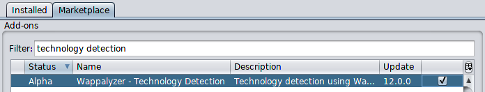
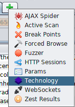
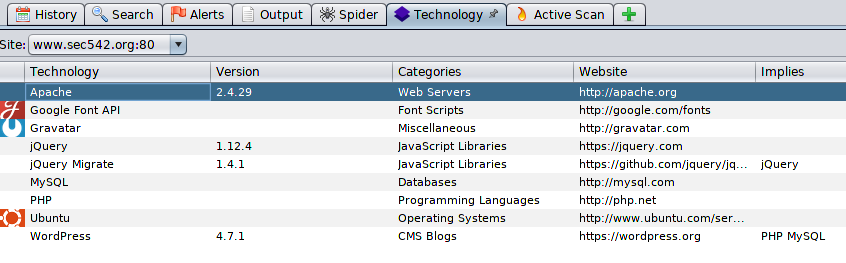

Identifying Web Technologies
1.
https://builtwith.com/ → this is used to check which technologies a particular
website is using. (BEST ONE)
2.
https://addons.mozilla.org/en-US/firefox/addon/wappalyzer/
→ Firefox addon
3. Whatweb → tool in kali linux is also used to get website information.
4. Wapplyzer →
Wappalyzer can provide insight into the following items: Operating system, Web server, Packaged web applications,
Language(s), Frameworks, APIs leveraged
By default the browser extensions send anonymous information about
websites you visit to wappalyzer.com.
This information is used to generate the statistics on this website, as
well as datasets that we sell. To respect your privacy we don't track full URLs (domain names only) and no
information can be traced back to you personally. You may opt-out by turning this feature off in the settings
◇
Website ◇
Chrome
Extension 5. ZAP + Wapplyzer
functionality → the marketplace of ZAP have the
Technology Detection
module that brings Wappalyzer functionality to ZAP
  Now when we will “Attack” other than Spidering it will also identify thhe
Technologies
